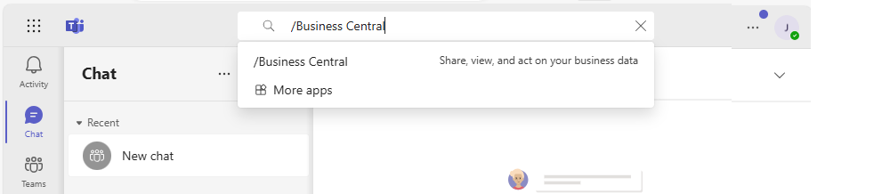
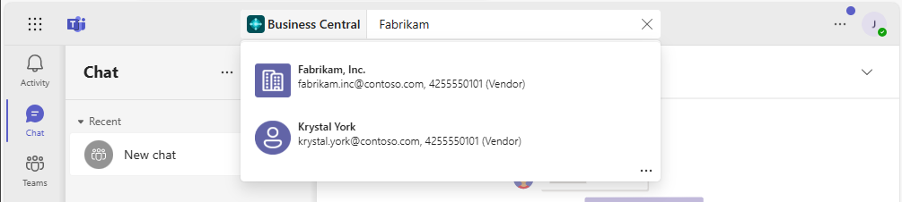
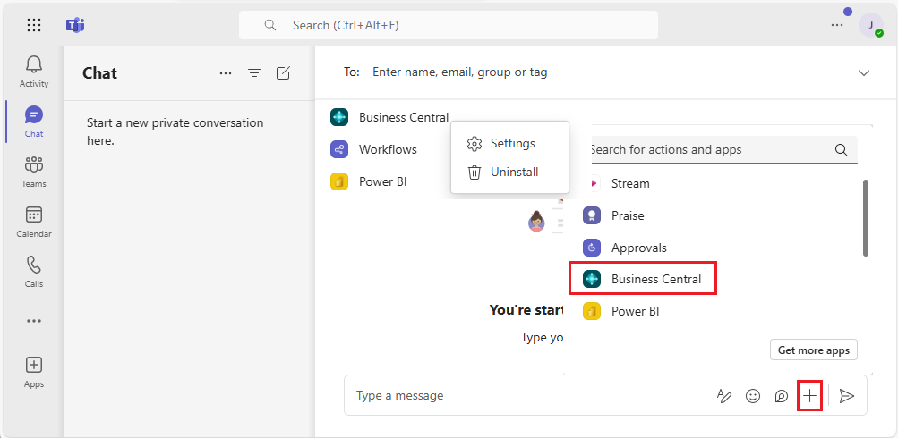
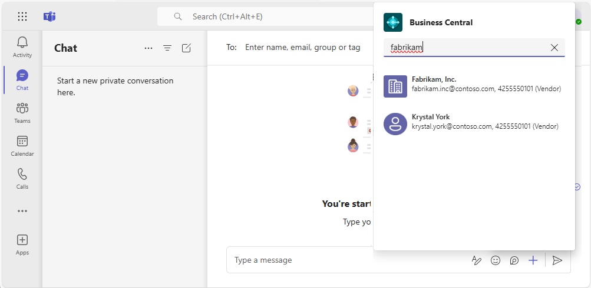

Suche nach Debitoren, Kreditoren und anderen Kontakten von Microsoft Teams
GILT FÜR: Business Central Online. Eingeführt im Jahr 2021 Veröffentlichungszyklus 1.
Business Central verfügt über ein umfassendes System zur Verwaltung von Geschäftskontakten, das für Benutzer in Vertriebs‑, Betriebs‑ oder anderen Abteilungsfunktionen unerlässlich ist. Wenn Sie ein Benutzer in einer dieser Rollen sind, müssen Sie häufig nachsehen, sich treffen oder ein Gespräch mit Ihren Debitoren, Kreditoren und anderen Kontakten beginnen. Mit der Business Central App für Teams können Sie diese Aufgaben direkt von Teams aus erledigen, ohne zu Business Central wechseln zu müssen. Innerhalb von Teams können Sie:
- Business Central-Kontakte aus dem Befehlsfeld Teams oder aus dem Bereich zum Erstellen von Nachrichten nachschlagen. Zu den Kontakten können potenzielle Debitoren, Kreditoren, Debitoren oder andere Geschäftsbeziehungen gehören.
- Teilen Sie einen Kontakt als Karte in einem Teamgespräch.
- Zeigen Sie Details zum Kontakt, den Interaktionsverlauf und andere Insights wie ausstehende Zahlungen oder offene Dokumente an.
Voraussetzungen
- Sie haben Zugriff auf Microsoft Teams.
- Sie haben die Business Central-App in Teams installiert. Weitere Informationen finden Sie unter Installieren Sie die Business Central App für Microsoft Teams
- Sie haben ein Business Central-Konto mit Zugriff auf Kontakte in mindestens einem Unternehmen.
Hinweis
Unabhängig davon, ob Sie über das Befehlsfeld oder das Nachrichtenerstellungsfeld suchen, werden Sie möglicherweise aufgefordert, sich beim ersten Mal anzumelden oder die App einzurichten. Dieser Schritt ist erforderlich, um nach Kontakten im richtigen Business Central-Unternehmen zu suchen. Weitere Informationen zum Einrichten der App zur Auswahl Ihres Unternehmens finden Sie unter Unternehmen und andere Einstellungen in Teams ändern.
Vom Befehlsfeld nach Kontakten suchen
Das Befehlsfeld befindet sich in Teams oben auf jedem Bildschirm. Sie können damit suchen, schnelle Aktionen ausführen oder Apps wie die Business Central-App starten. Die Suche über das Befehlsfeld ist ideal, um schnell nach Kontakten und den zugehörigen Daten für Ihren eigenen Gebrauch zu suchen. Angenommen, Sie möchten eine E-Mail-Adresse eines Kreditors nachschlagen, um eine Kalenderbesprechung einzurichten. Oder Sie möchten den Interaktionsverlauf während eines Meetings mit einem Debitor nachschlagen.
Geben Sie in das Befehlsfeld /Business Central ein, und wählen Sie dann die Business Central-App aus den Ergebnissen aus.

Geben Sie im Feld Business Central einen Suchtext wie einen Namen, eine Adresse oder eine Telefonnummer ein.
Während der Eingabe werden übereinstimmende Ergebnisse angezeigt.

Wählen Sie einen Kontakt aus den Ergebnissen aus.
Die Kontaktkarte wird unter dem Befehlsfeld angezeigt.
Wenn Sie die Kontaktkarte zu einem Gespräch hinzufügen möchten, gehen Sie in die obere rechte Ecke der Karte und wählen Sie ... (Weitere Optionen) > Kopieren aus. Fügen Sie dann die Kopie in das Feld zum Erstellen einer Nachricht einer Konversation ein.
Weitere Informationen zum Teams-Befehlsfeld finden Sie unter Teams – Befehlsfeld verwenden.
Vom Feld zum Erstellen einer Nachricht nach Kontakten suchen
Der Vorteil der Verwendung des Felds zum Erstellen von Nachrichten besteht darin, dass Sie einer Konversation eine Kontaktkarte direkt hinzufügen können, damit andere sie sehen können.
Wählen Sie neben dem Feld zum Verfassen von Nachrichten Auswählen + und dann Auswählen Business Central aus der Liste aus, um die App zu starten.

Beginnen Sie im Feld Business Central mit der Eingabe von Suchtext, z. B. einem Namen, einer Adresse oder einer Telefonnummer.
Während der Eingabe werden übereinstimmende Ergebnisse angezeigt.

Wählen Sie einen Kontakt aus den Ergebnissen aus.
Die Kontaktkarte wird im Feld zum Erstellen von Nachrichten angezeigt.
Hinweis
Die Kontaktkarte wird nicht sofort an das Gespräch gesendet, damit andere sie sehen können. Sie haben die Möglichkeit, den Inhalt der Karte zu überprüfen und nach Belieben Text davor oder danach hinzuzufügen. Senden Sie dann Ihre Nachricht an den Chat, wenn Sie bereit sind.
Kontaktkartendetails anzeigen
Die Kontaktkarte in Teams gibt Ihnen einen schnellen Überblick über den Debitor, Kreditor oder Kontakt. Die Karte ist interaktiv—, das heißt, Sie können weitere Informationen anzeigen oder sogar einen Kontakt ändern, indem Sie die Schaltflächen Details oder Pop-out verwenden.
Die Schaltfläche Details öffnet ein Fenster in Teams, in dem weitere Informationen zum Kontakt angezeigt werden, jedoch nicht so viele, wie Sie in Business Central sehen würden. Um alle Informationen zu einem Kontakt in Business Central zu sehen, wählen Sie Pop-out aus.
Die Kontaktkarte funktioniert genau wie Karten für Aufzeichnungen, z. B. Artikel, Debitoren oder Verkaufsaufträge. Weitere Informationen finden Sie unter Karte-Details anzeigen.
Hinweis
Alle Teilnehmer einer Teams-Unterhaltung können Karten für Business Central-Kontakte anzeigen, die Sie an die Unterhaltung senden. Um weitere Details zu Datensätzen anzuzeigen (durch Verwenden der Schaltflächen Details oder Pop-out auf einer Karte), benötigen diese jedoch Zugriff auf Business Central. Weitere Informationen finden Sie unter Integration verwalten Microsoft Teams.
Ähnliche Informationen
Übersicht über die Integration von Business Central und Microsoft Teams
Die App Business Central für Microsoft Teams installieren
Teams FAQ
Ändern von Firmen- und anderen Einstellungen in Teams
Datensätze in Microsoft Teams freigeben
Teams Problembehebung
Entwickeln für Teams Integration
Starten Sie eine kostenlose Testversion!
Kostenlose E-Learning-Module für Business Central finden Sie hier